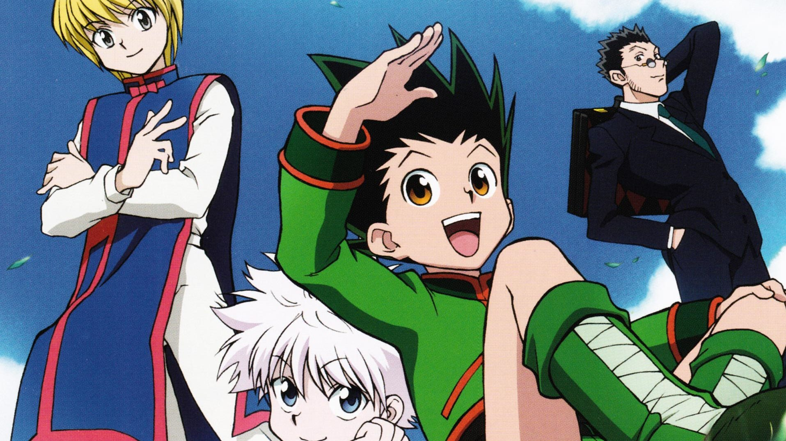
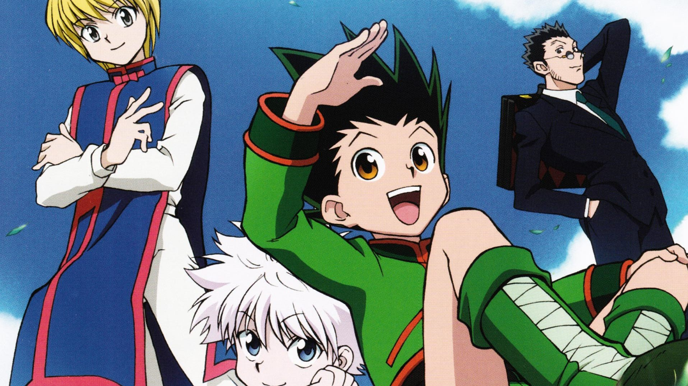

Fullmetal Alchemist: Brotherhood
Fullmetal Alchemist: Brotherhood é considerado um dos melhores animes de sempre. Sua execução é quase perfeita e seu impacto e popularidade com o público é gigante. A trama segue os irmãos Edward e Alphonse que são amaldiçoados após tentarem trazer sua mãe de volta à vida. Um dos imãos perde um braço. O outro quase é morto, mas tem sua alma presa a uma armadura. Agora, os dois procuram a Pedra Filosofal, conhecida por sua capacidade de fazer milagres, na esperança de voltarem a ser normais. Essa é, sem dúvida, uma das melhores histórias de procura pela verdade e redenção a que você pode assistir.
One Piece
One Piece tem para nos oferecer centenas de episódios de ação com momentos cômicos e emocionais à mistura. A história segue Monkey D. Luffy que sonha em se tornar o Rei dos Piratas. Para fazer isso, ele resolve seguir em busca do maior tesouro de sempre, o One Piece. Porém, ele precisa de sua própria tripulação de piratas para o conseguir. E, assim, começa uma aventura em alto marcom monstros gigantes, piratas e marinheiros perigosos. Ah, ainda criança Luffy ingeriu por acidente uma Akuma no Mi, também conhecida como Fruta do Diabo. A rara fruta lhe deu habilidades de elástico. e em sua jornada ele vai enfrentar perigosos inimigos, incluindo outras pessoas com poderes de Akuma no Mi.
Kimetsu no Yaiba
Um anime recente, Kimetsu no Yaiba - ou Demon Slayer, como também é conhecido - vem atraindo grandes olhares dos fãs de anime e da crítica, desde que foi lançado em 2019. A trama acompanha Tanjirō Kamado, um garoto bondoso que perde sua mãe e seus irmãos após um demônio massacrar sua aldeia natal. Apenas sua irmã Nezuko sobrevive, e ela também se torna um demônio, mas milagrosamente consegue manter emoções e pensamentos humanos. Carregando Nezuko em uma caixa em suas costas, para protegê-la do sol, Tanjirō decide partir em busca de treinar para se tornar um caçador de demônios, impedir que outras pessoas passem pela tragédia pela qual passou e para encontrar uma forma de transformar Nezuko de volta. Para tanto, ele precisa ser admitido e se graduar na organização milenar Demon Slayer Corps.
Bleach
Um dos animes mais adorados desde sua estreia em 2004 (2006, no Brasil), Bleach segue conquistando novas gerações de fãs com as incríveis e dramáticas aventuras de Ichigo Kurosaki. Um estudante do Ensino Médio, Ichigo presencia a batalha entre a ceifadora de Almas Rukia Kuchiki e uma perigosa criatura conhecida como Hollow. Quando ela já não consegue lutar, ela passa seus poderes para ele. Depois de relutantemente aceita a nova responsabilidade como Ceifador de Almas, Ichigo passa a proteger todos dos Hollows. Mas precisa ajuda Rukia, que está prestes a ser punida por ter passado seus poderes. Sua jornada, contudo, será marcada por muitos outros perigos, incluindo segredos por trás da respeitada Sociedade das Almas.
Hunter X Hunter
Gon Freecs é um garoto de 12 anos que cresceu acreditando que seu pai estava morto.Contudo, ele descobre que eleo pai está vivo e é um lendário Caçador, profissionais que são pagos para realizar missões que vão desde encontrar um tesouro até a busca de fugitivos ou o assassinato de inimigos. O jovem decide, então, treinar para também se tornar um Caçador. Hunter X Hunter é um anime com uma trama muito boa, grande desenvolvimento de personagens, cheio de ação e substância emocional. Você não vai se cansar por um minuto e não vai conseguir parar de assistir os episódios.
Ushio to Tora
A história segue Ushio Aotsuki, que achou um demônio-tigre vivo empalado em uma lança no porão da sua casa. Ao abrir os portões que levavam até o porão, Ushio acabou liberando o cheiro da criatura e, assim, vários outros demônios menores começam a atacar suas amigas. A única opção de Ushio é libertar o demônio da lança para ajudá-lo. A partir daí, Tora, o demônio-tigre, se junta a Ushio contra sua vontade para derrotar outros demônios. Esse é um anime adaptado de um mangá lá dos anos 90, um shounen de batalha ao estilo de Dragon Ball e tantos outros. A primeira parte é mais focada em derrotar outros demônios, então cada episódio tem um conflito iniciado e concluído no mesmo, e assim vão seguir a maioria deles. E todos os episódios têm pelo menos uma lição de moral. Ushio e Tora estão sempre brigando e sempre é engraçado. Outra coisa legal é que nenhum dos dois é tão poderoso assim, e eles sempre precisam um do outro para matar os outros demônios. A animação é sensacional, mesmo seguindo o estilo antigo do mangá, e a trilha sonora é ótima também.


 
